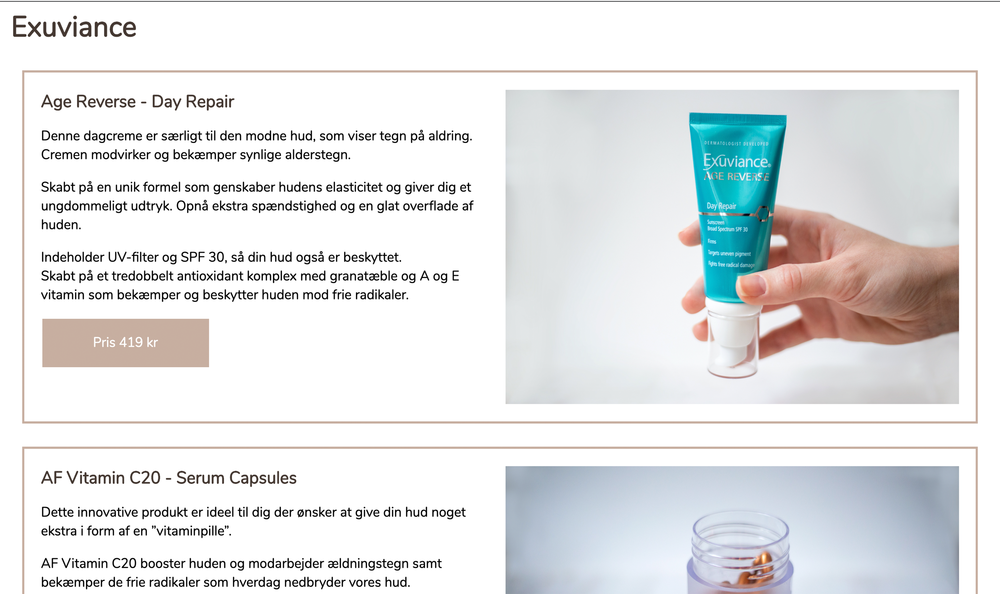
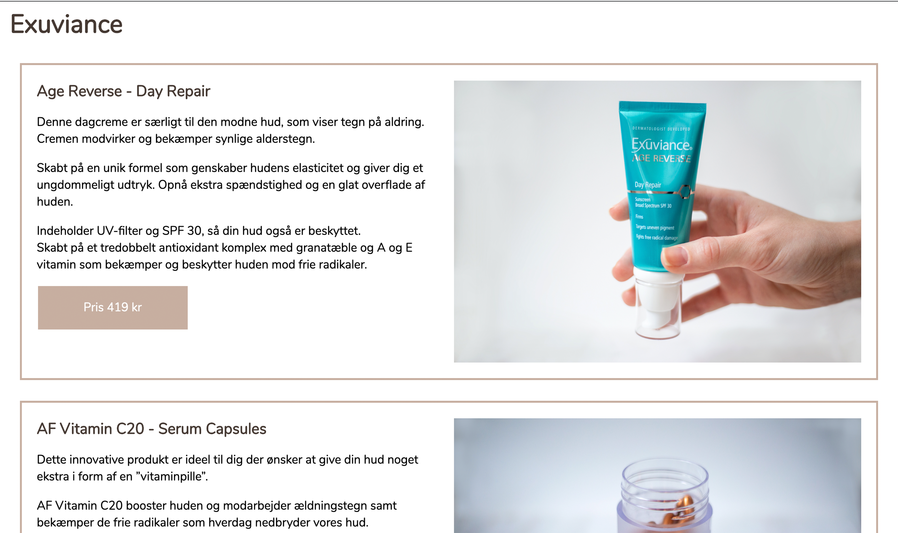
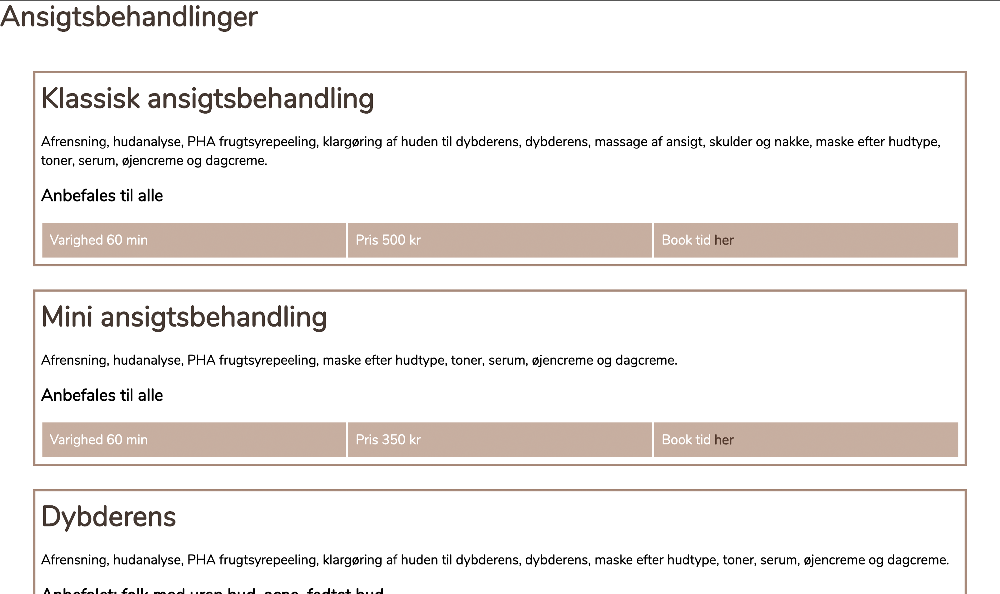
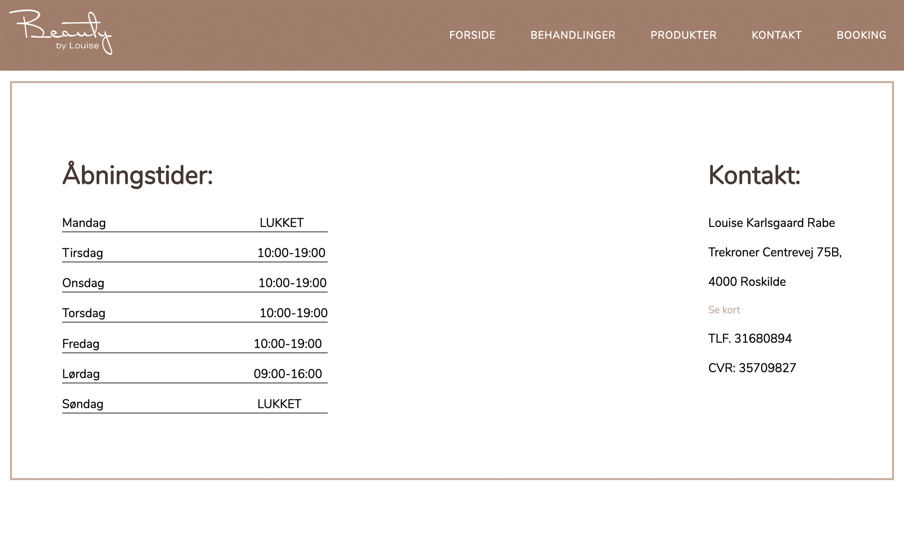
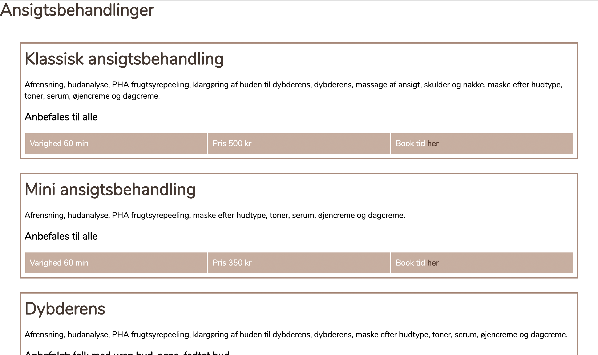
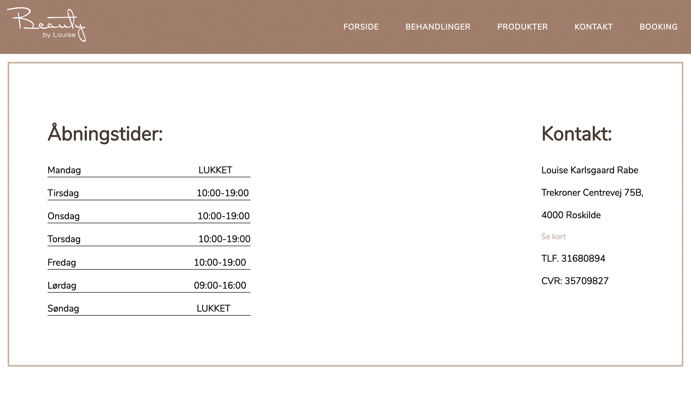

GRUNDLÆGGENDE INDHOLD
Dette tema var et 4 ugers langt forløb om grundlæggende indhold. Det var også det mest omfattende og krævende forløb, idet vi ikke havde lang tid til opgaverne. Vi startede med en lille pilotvideo, derefter skulle vi finde en virksomhed i gruppevis. Det var lærerigt at skulle gennemgå idéprocessen og analysere en virksomhed, derefter redesigne en en eksisterende hjemmeside. Min gruppe redesignede en hjemmeside for Beauty By Louise - selvstændig kosmetolog med egen klinik i Trekroner.
REDESIGN
Vores redesign opgave var det sidste projekt på 1. semester, hvor vi blev stillet til opgave at redesigne en eksisterende virksomheds hjemmeside. Vi havde primært fokus på at fremme virksomhedens stifter, Louise Karlsgaards personlighed, koncept og tilbud af behandlinger, samt gøre hjemmesiden mere overskuelig, varm, imødekommende og brugervenlig. Vi samlede al den information vi kunne om virksomheden, og så lavede vi BERT test og en 5-seksunders test for at få så meget dataindsamling om virksomheden. Dertil skulle vi producere maks 3 videoer der kort præsenterede virksomheden.
Vi valgte at producere tre korte videoer med forskellige formål og målgrupper; præsentationsvideo, Facebookvideo og spash-video. Hvortil vi brugte den lærte teknik i interviewguide, klipning, video-optagelse og redigering af film i premier pro. Min primære rolle på projektet var at producere, optage, grade, klippe og redigere videoerne, samt designe hjemmesiden.
Dokumentation
 
   
 
Swipe for at se processen
PILOT - SIGNES PASSION FOR KUNST


Swipe for at se processen
I vores første opgave på forløbet om grundlæggende indhold, skulle vi lære at redigere videoer i Adobe Premiere Pro. Vi skulle lave en 1 minuts video, hvor vi skulle interviewe en person, der havde en passion inden for et emne. Jeg valgte at interviewe min medstuderende Signe Hyllessted, som er selvlært kunstner og har medvirke i 'Danmarks næste portrætmaler'.
Processen var en lærerig procces, og man fik allerede indblik i filmverdenens kæmpe arbejde, idet man skal forberede og lave storyboards, samt kill-you-darlings, da den kun skulle vare 1 minut. Vi fik interviewteknik, læren om dramaturgien, 5-skudreglen og kameraindstillinger, samt lydredigering.